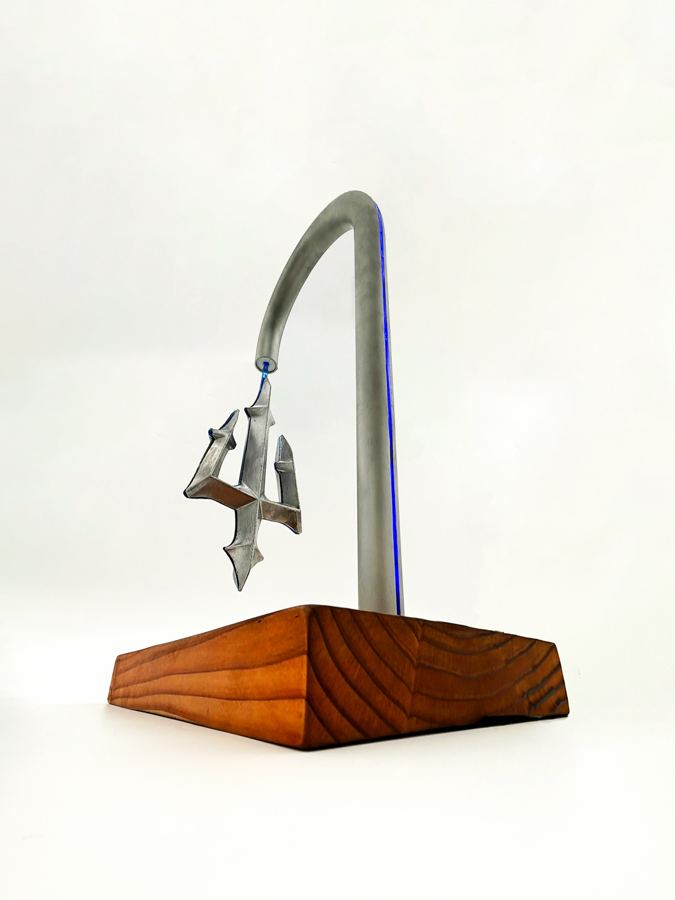
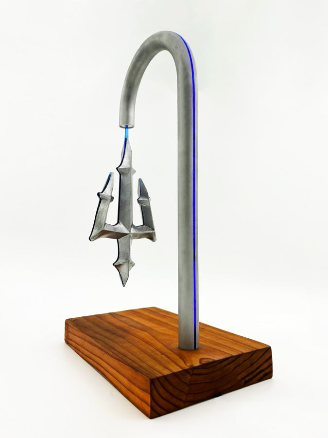
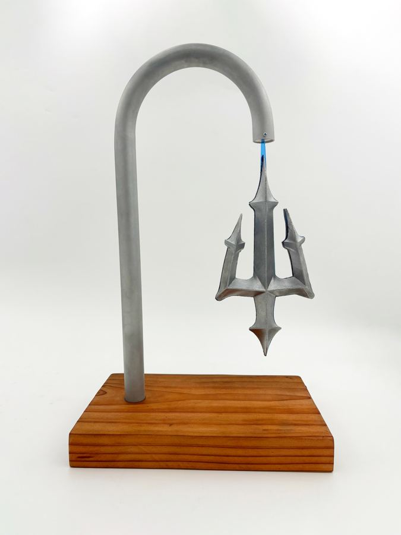
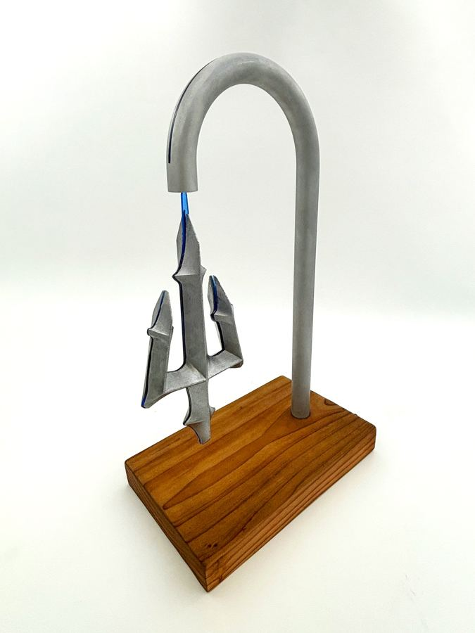
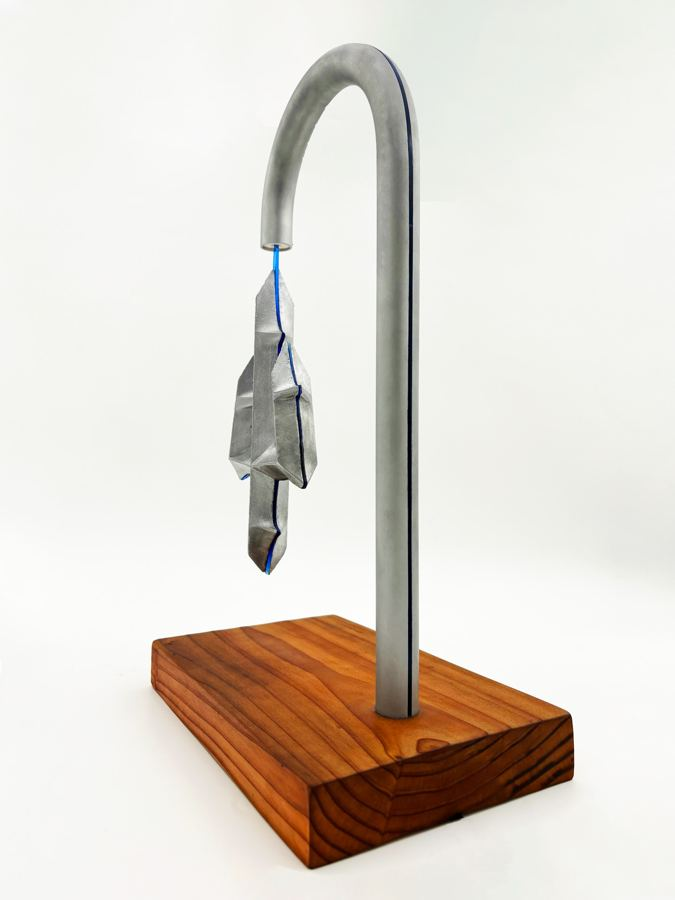
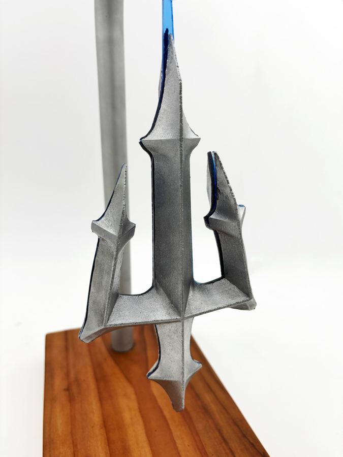

Neptune's Lamp
A sculptural desk lamp inspired by the trident, balancing art and utility. A metal trident hangs from an arched arm over a solid wood base, and an innovative activation mechanism turns switching on the light into an interactive moment.
Model
Drag to orbit · scroll to zoom
At a Glance
Tridentsculptural pendant form
Metal + woodarched arm on a solid wood base
Interactivecustom activation mechanism
Desk lampeveryday lighting as art
Concept
Neptune's Lamp treats a desk lamp as a sculpture first. The trident hangs from a tall arched arm like a suspended artifact, and a glowing accent traces the arm down to it. The warm wood base grounds the cool metal above it.
Design
- Trident pendant: a detailed metal trident suspended below the arm
- Arched arm: a single bent metal tube that carries the light and holds up the trident
- Wood base: a solid wood block with the power connection routed out underneath
- Activation mechanism: an interaction designed to make turning the lamp on part of the experience
Video
Gallery
-sm.jpg)






-sm.jpg)